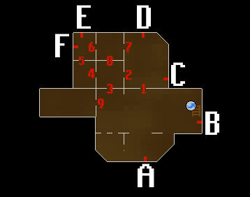
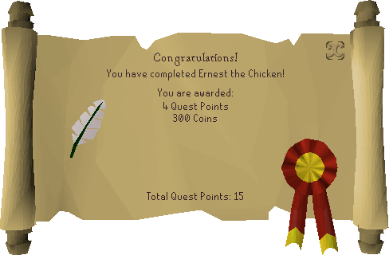

Ernest the Chicken

Description
Veronica and her fiance Ernest had gotten lost. Seeing the Draynor Manor, Ernest decided to go in the manor to ask for directions, however, an hour has passed since then and Ernest still has not yet returned. The house looks too spooky for Veronica to venture in herself, will you go and see if you can find him for Veronica?
Required Items
- Spade
- Fish food
- Poison
- Pressure gauge
- Rubber tube
- Oil can
Steps
Starting out
Begin the quest by speaking to Veronica just outside the courtyard of Draynor Manor. Agree to help her and enter the manor. Enter the first central room and climb up the staircase. Then climb up the spiral staircase immediately west to find Professor Oddenstein. Professor Oddenstein explains that Ernest was turned into a chicken when he was helping him on an experiment with his "pouletmorph" machine. However, to change him back, the professor needs parts that were stolen and hidden by the poltergeists in the manor.
You need to help him find a pressure gauge, a rubber tube, and an oil can.
Pressure gauge
To get the pressure gauge, fish food and poison are required.
Fish food
- From Professor Oddenstein's lab, go down the spiral staircase back to the 2nd floor.
- From the main staircase, go through the east door.
- Head south and go through the south door.
- Finally, go through the west door to reach the room directly south of the main staircase. Pick up the box of fish food from the floor.
- Return to the main staircase and go downstairs to the 1st floor.
Poison
- From the main staircase on the first floor, head to the north-western room of the manor where the kitchen is located.
- Enter the kitchen supply room and pick up the bottle of poison from the floor.
Use the poison on the fish food to create poisoned fish food.
Retrieving the pressure gauge
- Leave the manor by exiting through the door in the south-eastern room of the manor.
- Pick up the spade in this room before you exit as you will need it later.
- Once outside, head towards the south-western corner of the courtyard where the fountain is located.
- Upon inspection, the pressure gauge appears to be in the fountain, however, the fountain is also infested with a school of hungry piranhas.
- Use the poisoned fish food on the fountain to poison the piranhas.
- Search the fountain to get the pressure gauge.
Rubber tube
- From the fountain, go directly north to reach the western side of the manor grounds where a cabbage patch is located.
- Using the spade you acquired earlier, search the compost heap south of the cabbage patch to obtain a key.
- Go back inside the manor through the front entrance.
- Using the key, go through door to the room behind the staircase.
- Be careful, the room is inhabited by an aggressive skeleton.
- Pick up the rubber tube from the floor and leave as quickly as possible.
Oil can
Go to the western room on the 1st floor, search the bookcase on the western side on the wall to gain access to a secret room. Go down the ladder into the basement where there will be doors and levers around you. Follow the steps given below to obtain the oil can:

- Pull Levers A and B down.
- Enter Door 1.
- Pull Lever D down; leave C up.
- Enter Door 1.
- Pull Levers A and B up.
- Enter Doors 3, 4 and 5.
- Pull Levers E and F down.
- Enter Doors 6 and 7.
- Pull Lever C down.
- Enter Doors 7 and 6.
- Pull Lever E up.
- Enter Doors 6, 8 and 3.
- Go through Door 9 and grab the oil can.
Finishing up
Leave the basement and leave the secret room by pulling the lever on the eastern wall.
Finally, go back the top floor and talk to Professor Oddenstein. Give him the items, he will fix his machine which turns Ernest back into a human.
Quest complete!

Quest List